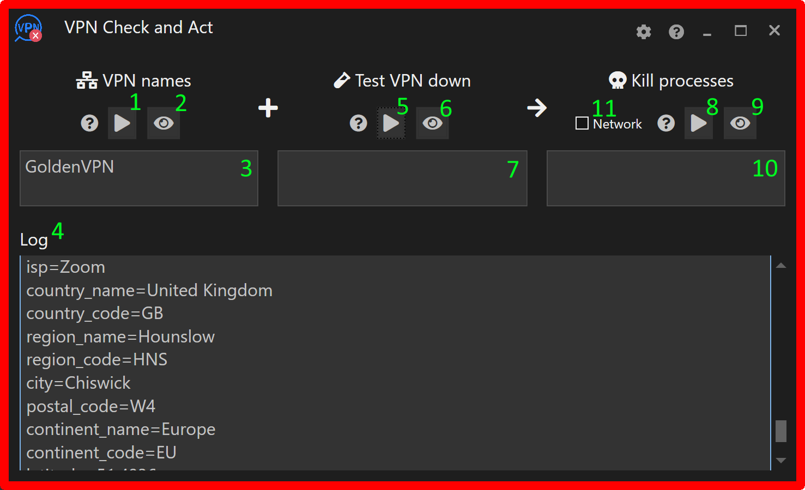
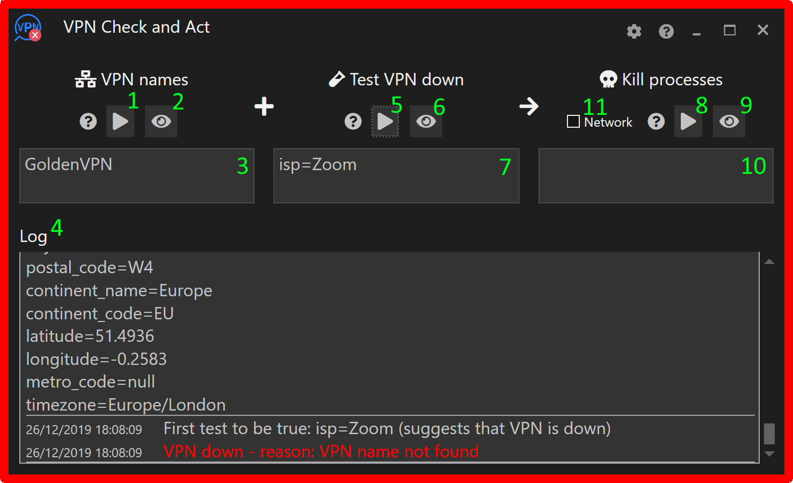

There are three steps to configuring VPN Check and Act.
Enter the names of the VPNs to be monitored.
Enter the tests to determine if the network traffic is using the operational VPN. This step is optional. If it is not configured, VPN Check and Act will not be able to determine whether the VPN is operating correctly however it will continue to be able to determine if a VPN is active.
Enter actions to take if the VPN fails. These will be to either kill a specific application or kill the entire network.
Please note that all entries are case-insensitive. (E.g. entering goldenvpn will detect GoldenVPN.)
The three steps correspond to the three text boxes along the top half of the VPN Check and Act user interface. Each text box has three accompanying icons with the following functions.
Displays help for the setting
Tests and activates the setting
Displays relevant information to be used with the setting
Here's a video showing the configuration.
1. Entering the VPN names
Start your VPN and then click (#2).
The log (#4) will display the current network connections (above screenshot). From the log, identify your operational VPN and choose text that differentiates the VPN from the other network connections. In the above example, 'GoldenVPN' is used. 'GoldenVPN London' would also work but you may have other configurations of GoldenVPN, such as one that uses servers in Belgium, which might be identified as 'GoldenVPN Belgium'. This, obviously, would not match the 'GoldenVPN London' text.
Copy (or type) the chosen text into the box (#3).
Click (#1). If the name has been entered correctly and the VPN is still working, VPN Check and Act's border will turn green (below screenshot) and the log explains why the VPN is believed to be operational.
(Note that in the above screenshot VPN Check and Act's border is grey, this indicates that the VPN can not be determined.)
2. Entering the tests

Disconnect the VPN (the border becomes red) and click (#6).
The log will display the current http headers coming from your computer as viewed by an external observer (above screenshot). When a VPN is not operational, the headers will present the computer's true geographic values but when a VPN is operational these values will be from the active VPN server.

Enter one or more tests that are true when the VPN is not operational. Some obvious tests such as using the value of the city don't always work well. You may find that, the city changes even when connecting from the same location. Testing the country would be safer, but that would mean it would not be possible to use a VPN that is based in your home country - which may, or may not, be a problem for you. A test that usually works well is the name of your ISP, as in the above example. Copy the desired test(s) into the box (#7).
Click (#5) and the log should state that the VPN is down because one of the tests is true (above screenshot).
Start the VPN and the border should go green and the log should state the VPN is up. Now click (#5) again. The result should be the log states that one of the tests was false and therefore the VPN is up (below screenshot).
3. Entering the actions for when the VPN goes down
If the required action for when the VPN goes down is to stop all network traffic, check the network box (#11).
However, if the requirement is to only terminate certain applications, then the corresponding process names need to be entered into the box (#10). The process name is usually similar, but often not identical, to the application name. To obtain the process name, start the application (after starting the VPN if it is very sensitive) and click (#9).
The log will show the running processes - there will be quite a few. Find the process that corresponds to the application that should be terminated when the VPN fails.
Enter the process name in the box (#10). (Above screenshot.)
Click (#8) and if the application is still running, the below warning will be shown. If you are happy with the warning, click the Yes button and confirm the application has been terminated. If it hasn't been terminated, probably the wrong process name was selected. (Try to find the correct process name and try again.) Obviously, in normal operation, the warning will not be shown but rather the application will be immediately terminated.
4. That's it
VPN Check and Act should now be operational. To test, bring up and down your VPNs, and make sure the required applications are being terminated.
Each of the boxes #3, #7 and #10 can have multiple entries but only one entry per line. Whenever, you make a change to a box contents, click the corresponding button (it should be pulsing) to activate the change.
Some further settings/actions are available via the cog button (#12). The most important one being the purchase button! (If the trial period has ended, and hence you can't access the purchase button, please purchase via the Microsoft Store.)
Application Pre-Launch VPN Check
There may be some sensitive applications that you only want to run if a VPN is up. To implement this constraint, drag and drop the sensitive application onto VPN Check and Act's main window (though not onto a text box). This will create a new shortcut on your Windows desktop called "VPNCA" + the application's filename and with an icon taken from the application. Double clicking the shortcut will initiate a check on the VPN's status and if the VPN is up, the application will be launched; if the VPN is not up, a user prompt will be displayed.
You will probably want to rename the shortcut to something more meaningful. Also you may wish to change the shortcut's icon.
Drag and dropping multiple applications will create a single shortcut that launches all the dropped applications. The shortcut's filename and icon will come from the first application in the dropped group.
Settings
The following can be found on the settings page which is accessible via the cog button.
Mode (theme)
Whether to use Dark or Light mode for the user interface. Choosing 'Window setting' will reflect the Windows' mode setting.
Save VPN status changes to Windows Notification Center
Notifications (e.g. VPN Up) will be saved to the Windows Notification Center (usually accessible by swiping left from Windows' right edge. If not checked, notifications will be visible in the Center for a few seconds and then removed.
Hide from Windows taskbar when minimized
When minimized, VPN Check and Act will only be visible in the Windows Notification Area (also called the System Tray) usually located at the bottom right of the desktop.
Mute notification sounds
Mute all sounds (typically occur when the VPN goes up or down) produced by VPN Check and Act.
Brighten the log on updates
Add a brighten animation to the log window when it is updated.
If tests timeout, assume VPN is down
If, when running the tests that check the correct operation of the active VPN, the tests time-out or fail to run then assume the VPN is down.
Extra logging
Log additional (not directly relevant to the operation of VPN Check and Act) events to the log. Currently, the only additional event is session lock/unlock though additional ones may be added in future releases.